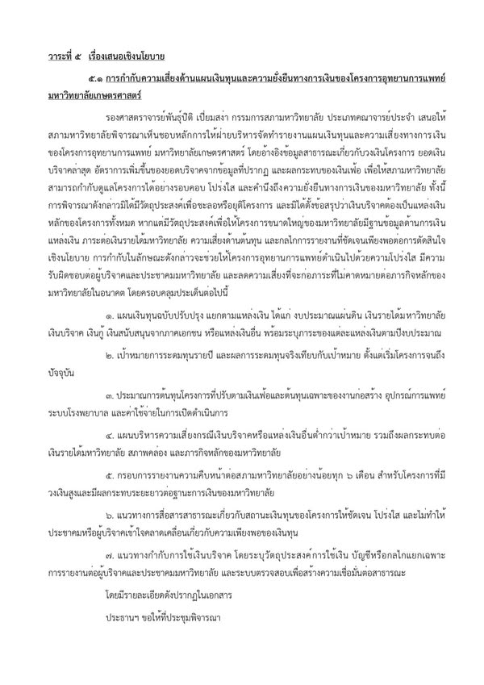

โครงการโรงพยาบาลต้องมีแผนเงินทุนที่โปร่งใสและตรวจสอบได้
{kind=link}

ในการประชุมสภามหาวิทยาลัยเมื่อวันจันทร์ที่ผ่านมา ผมเสนอวาระเกี่ยวกับแนวทางบริหารจัดการเงินบริจาคและแผนเงินทุนของโครงการโรงพยาบาล ซึ่งเป็นวาระสุดท้ายก่อนครบวาระการดำรงตำแหน่งกรรมการสภามหาวิทยาลัยในครั้งนั้น
เรื่องนี้มีผลต่อความโปร่งใส ความรับผิดชอบ และความเชื่อมั่นของผู้บริจาค บุคลากร ผู้รับบริการ และประชาคมมหาวิทยาลัย จึงไม่ควรอยู่เพียงในบทสนทนานอกระบบ แต่ควรถูกนำเข้าสู่การพิจารณาและติดตามอย่างเป็นทางการ
ข้อมูลสาธารณะเป็นจุดเริ่มต้น ไม่ใช่ข้อสรุปสุดท้าย
เอกสารใช้ข้อมูลสาธารณะที่ปรากฏในเวลานั้นเป็นจุดตั้งต้น ได้แก่ วงเงินโครงการอุทยานการแพทย์รวม 8,863.93 ล้านบาท ข้อมูลแหล่งงบประมาณจากเงินรายได้มหาวิทยาลัยและเงินบริจาค 1,386.10 ล้านบาท และยอดเงินบริจาคสะสมสร้างโรงพยาบาลเกษตรศาสตร์ ณ วันที่ 1 กรกฎาคม 2569 จำนวนประมาณ 282.95 ล้านบาท
ตัวเลขเหล่านี้ไม่เพียงพอที่จะสรุปว่าโครงการขาดเงิน หรือเงินบริจาคต้องรับภาระค่าใช้จ่ายทั้งหมด ยอดบริจาคอาจรวมเงินที่สะสมก่อนจุดเริ่มต้นของการเปรียบเทียบ และข้อมูลสาธารณะสองจุดไม่สามารถยืนยันอัตราการระดมทุนจริงได้ แต่ความไม่ครบถ้วนของภาพรวมคือเหตุผลที่สภาควรขอข้อมูลแผนเงินทุนอย่างเป็นระบบ
ประเด็นไม่ใช่ว่าควรมีโรงพยาบาลหรือไม่
ข้อเสนอไม่ได้เรียกร้องให้ชะลอหรือยุติโครงการ และไม่ได้ลดคุณค่าของการสร้างโรงพยาบาล การแพทย์ หรือการบริการสาธารณะ คำถามคือโครงการขนาดใหญ่และใช้เวลาหลายปีมีโครงสร้างเงินทุนที่สอดคล้องกับแผนก่อสร้างและแผนเปิดดำเนินการหรือไม่
การสนับสนุนเป้าหมายของโครงการกับการตรวจสอบความเป็นไปได้ทางการเงินไม่ใช่สิ่งตรงข้ามกัน ยิ่งโครงการมีความสำคัญมาก การบริหารความเสี่ยงยิ่งต้องชัด เพื่อไม่ให้ความสำเร็จของช่วงก่อสร้างสร้างภาระที่ไม่พร้อมรับในช่วงดำเนินงาน
แผนเงินทุนต้องตอบว่าใครรับภาระส่วนใด
สภาควรได้รับภาพที่แยกแหล่งเงินอย่างชัดเจน ไม่ว่าจะเป็นงบประมาณแผ่นดิน เงินรายได้มหาวิทยาลัย เงินบริจาค เงินกู้ เงินสนับสนุนจากภาคเอกชน หรือแหล่งอื่น พร้อมกรอบเวลาว่าเงินแต่ละส่วนจะเข้ามาเมื่อใดและผูกพันกับกิจกรรมใด
หากการระดมทุนไม่เป็นไปตามแผน ต้องมีทางเลือกสำรองที่ระบุล่วงหน้า ไม่ใช่รอให้เกิดช่องว่างแล้วค่อยโยกภาระไปยังเงินรายได้มหาวิทยาลัย เพราะการตัดสินใจเช่นนั้นอาจกระทบการเรียนการสอน วิจัย บุคลากร และการลงทุนจำเป็นด้านอื่น
ต้นทุนจริงไม่ได้มีเพียงค่าก่อสร้าง
โครงการโรงพยาบาลต้องเผชิญทั้งเงินเฟ้อ ต้นทุนวัสดุก่อสร้าง อุปกรณ์การแพทย์ ค่าแรงบุคลากร ดอกเบี้ย ต้นทุนเงินทุน และค่าใช้จ่ายในการเปิดดำเนินงาน การใช้ CPI ทั่วไปในเอกสารเป็นเพียงการวิเคราะห์สถานการณ์เบื้องต้น ไม่ใช่ตัวแทนต้นทุนเฉพาะของโครงการทั้งหมด
รายงานต่อสภาจึงควรมีทั้งประมาณการต้นทุนที่ปรับปรุงแล้ว sensitivity analysis ภายใต้สถานการณ์ต่าง ๆ ความเสี่ยงด้านสภาพคล่อง ต้นทุนดำเนินงานหลังเปิดใช้ และจุดตัดสินใจที่กำหนดว่าเมื่อใดต้องปรับขนาด ระยะเวลา หรือแหล่งเงิน
ความเชื่อมั่นของผู้บริจาคเกิดจากการเห็นว่าเงินเดินทางไปไหน
ผู้บริจาคไม่ได้ต้องการเพียงยอดรวม แต่ควรเห็นความคืบหน้า การใช้เงิน ผลที่เกิดขึ้น และความสัมพันธ์ระหว่างเงินบริจาคกับแผนโครงการ การรายงานอย่างสม่ำเสมอช่วยทั้งสร้างความเชื่อมั่นและลดความเสี่ยงที่ความคาดหวังของผู้บริจาคจะไม่ตรงกับข้อจำกัดจริงของโครงการ
ความโปร่งใสจึงไม่ใช่การเปิดตัวเลขครั้งเดียว แต่เป็นระบบรายงานที่มีนิยามคงเส้นคงวา เปรียบเทียบข้ามเวลาได้ และอธิบายความเปลี่ยนแปลงเมื่อแผนไม่เป็นไปตามสมมติฐานเดิม
บทบาทของกรรมการสภาคือทำให้ความเสี่ยงถูกพิจารณา
กรรมการสภามหาวิทยาลัย โดยเฉพาะกรรมการจากคณาจารย์ ไม่ควรทำหน้าที่เพียงเข้าร่วมประชุมตามวาระ แต่ต้องช่วยชี้ให้เห็นปัญหา ติดตามและทักท้วงการบริหารอย่างสร้างสรรค์ และเป็นกระบอกเสียงให้ประชาคมมหาวิทยาลัย
การนำเรื่องเข้าสู่วาระไม่ได้หมายถึงการตัดสินว่าฝ่ายใดผิด แต่ทำให้ข้อเท็จจริง สมมติฐาน ความเสี่ยง และทางเลือกเข้าสู่กระบวนการที่มีผู้รับผิดชอบ มีการบันทึก และสามารถติดตามต่อได้ นี่คือหน้าที่กำกับดูแลที่ต่างจากการลงไปบริหารโครงการแทนฝ่ายบริหาร
เอกสารประกอบฉบับเต็ม · 6 หน้า วาระที่ 14: การกำกับความเสี่ยงด้านแผนเงินทุนและความยั่งยืนทางการเงิน ดาวน์โหลดข้อเสนอเชิงนโยบายสำหรับโครงการอุทยานการแพทย์ มหาวิทยาลัยเกษตรศาสตร์